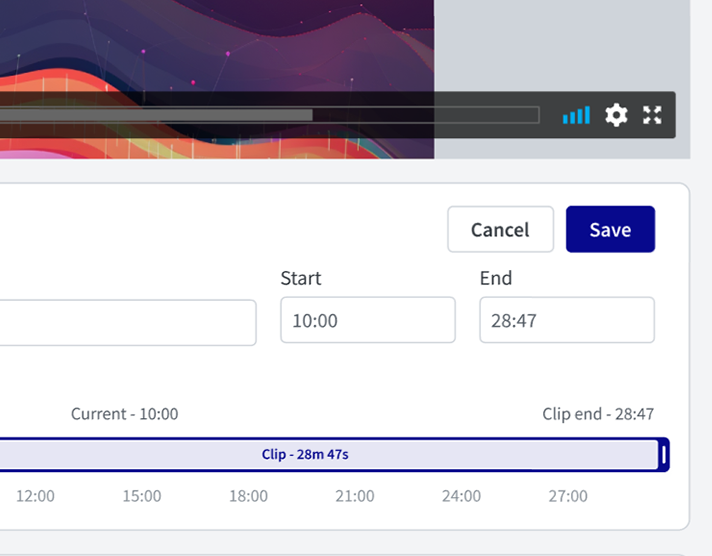

Seismic · 2024
Video Foundation Service
Consolidating a fragmented video experience into one architecture — playback, recording, upload and editing — for customers whose expectations are set by YouTube and Netflix.
Client
Seismic
Year
2024
Role
Lead Product Designer
Focus
Rich Media · Platform · Motion

The problem
The user experience for video and related assets in Seismic was sub-standard and fragmented. Playback, recording, upload, and management had each been built separately, at different times, against different assumptions.
Two shifts made that unsustainable. First, customer expectations are now set by YouTube and Netflix — consumer-grade video is the baseline, not a differentiator. Second, remote work made everyone a video producer: Zoom, Chorus, and Gong normalized recording yourself, so users arrived already fluent and already impatient.
Four initiatives
- Video Foundation Service (VFS). A unified architecture acting as the single integration point for third-party video platforms — managing media, transcripts, captions, thumbnails, and GIFs in one place.
- Enhanced playback and recording. Updates to the Universal Player and the User Generated Video Recorder, with third-party provider integrations behind a consistent interface.
- Upload and download components. Configurable, reusable components that work across media and traditional content types instead of forking per content type.
- Video editing. New capabilities to edit videos or add text, images, graphics, and calls-to-action — bringing personalization and collaboration into the video workflow itself.
Why a foundation, not a feature
Every one of these could have shipped as an isolated improvement. Designing them against a shared service meant transcripts, captions, and thumbnails behave identically wherever video appears — and that each new video capability gets cheaper to add, not more expensive.
Fragmentation is a design problem before it is an engineering one. Users don't experience your architecture; they experience its seams.